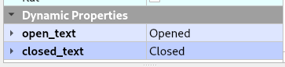
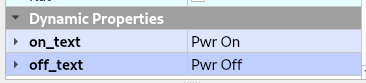
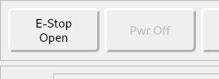

Controls¶
Command Buttons Tutorial Home Controls Tutorial
E Stop and Power¶
The E Stop push button Open/Closed state text can be set by adding two string type Dynamic Properties open_text and closed_text. The text in those two properties will be used if found. See Dynamic Properties
The Power push button On/Off state text can be set by adding two string type Dynamic Properties on_text and off_text. The text in those two properties will be used if found. The default text is Power Off and Power On.
Note
To have two words be above and below insert a backslasgh and n between the words.
This is how the above looks in the GUI
Coordinate System Controls¶
A QPushButton can be used to clear the current coordinate system by using 0 as the index or any one of the 9 coordinate systems with (1-9).
To clear the G92 coordinate system use 10 as the index.
Control Function |
Object Name |
Clear Current G5x |
clear_coord_0 |
Clear G5x Coordinate System |
clear_coord_(1-9) |
Clear G92 Coordinate System |
clear_coord_10 |
Options¶
The QPushButton options are toggle-type buttons; press to turn on, press again to turn off. They are normal push buttons but Flex automatically makes them checkable.
Function |
Widget |
Name |
Flood Toggle |
QPushButton |
flood_pb |
Mist Toggle |
QPushButton |
mist_pb |
Optional Stop at M1 |
QPushButton |
optional_stop_pb |
Block Delete line that starts with / |
QPushButton |
block_delete_pb |
Feed Override Enable/Disable |
QPushButton |
feed_override_pb |
Axis Index¶
X 0
Y 1
Z 2
A 3
B 4
C 5
U 6
V 7
W 8
Jog Controls¶
Jogging requires a Jog Velocity Slider and Jog Mode Selector. If either is not found, Jog Buttons will be disabled. This type of jog controls provides a button for each axis and jog direction.
Function |
Widget |
Name |
Jog Plus Axis (0-8) |
QPushButton |
jog_plus_pb_(0-8) |
Jog Minus Axis (0-8) |
QPushButton |
jog_minus_pb_(0-8) |
Jog Velocity Slider |
QSlider |
jog_vel_sl |
Jog Velocity Label |
QLabel |
jog_vel_lb |
Jog Mode Selector |
QComboBox |
jog_modes_cb |
Note
Jog Plus/Minus buttons use the Axis Index. So Jog Y Plus is jog_plus_pb_1.
Note
Jog Mode Selector reads the ini entry [DISPLAY] INCREMENTS and if not found, only Continuous will be an option.
Jog Selected Axis Controls¶
To add Axis style jog controls where you select an axis then the plus/minus buttons jog the selected axis add a QRadioButton for each axis and a QPushButton for Plus and Minus. Axes are 0-8 for X, Y, Z, A, B, C, U, V, W.
Function |
Widget |
Name |
Axis Select (0-8) |
QRadioButton |
axis_select_(0-8) |
Jog Plus |
QPushButton |
jog_selected_plus |
Jog Minus |
QPushButton |
jog_selected_minus |
Overrides¶
A QSlider is used to control the following functions and the corresponding label shows the value of the slider:
Function |
Widget |
Object Name |
Feed Override Slider |
QSlider |
feed_override_sl |
Feed Override Percent |
QLabel |
feed_override_lb |
Rapid Override Slider |
QSlider |
rapid_override_sl |
Rapid Override Percent |
QLabel |
rapid_override_lb |
Spindle Override Slider |
QSlider |
spindle_override_sl |
Spindle Override Percent |
QLabel |
spindle_override_0_lb |
Maximum Velocity |
QSlider |
max_vel_sl |
Override Limits |
QCheckBox |
override_limits_cb |
The following settings can be used in the DISPLAY section of the ini file:
Feed Override maximum MAX_FEED_OVERRIDE
Spindle Override maximum MAX_SPINDLE_OVERRIDE
Override Presets¶
Feed, Rapid and Spindle overrides can have a preset button(s) for different preset amounts. Replace the nnn with the percent of override you want that button to use.
Function |
Widget |
Object Name |
Feed Override Preset |
QPushButton |
feed_percent_nnn |
Rapid Override Preset |
QPushButton |
rapid_percent_nnn |
Spindle Override Preset |
QPushButton |
spindle_percent_nnn |
Note
The maximum override for Rapid is 100
Stacked Widget¶
To change to a specific page on a QStackedWidget add a QPushButton on each page and set a couple of Dynamic Properties. See Dynamic Properties
Dynamic Property Name |
Value |
change_page |
QStackedWidget Object Name |
index |
index of page to change to |
To create a Next Page and Previous Page buttons for a QStackedWidget add two QPushButtons with the following Dynamic Properties. See Dynamic Properties
Button Function |
Dynamic Property Name |
Value |
Next Page |
next_page |
QStackedWidget Object Name |
Previous Page |
previous_page |
QStackedWidget Object Name |
Note
The Forward and Backward Buttons should not be in the QStackedWidget